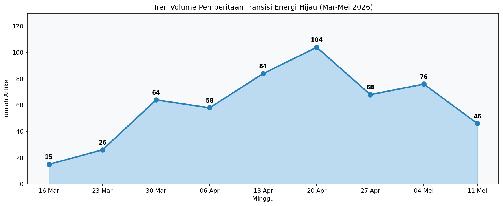
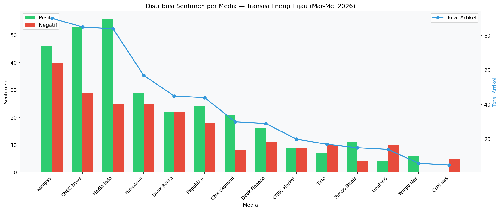
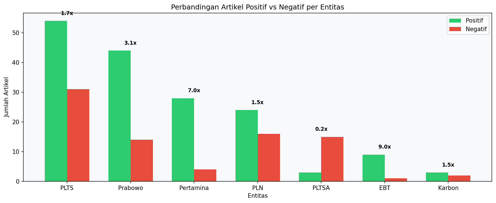

Transisi Energi Hijau di Indonesia
Ringkasan
Dari 541 artikel dari 14 media nasional (2 bulan), pemberitaan transisi energi hijau didominasi oleh PLTS (62 artikel, sentimen +2.57) — didorong oleh target ambisius Prabowo 100 GW PLTS, ekspansi PLN IP ke Bangladesh (495 MW), dan deregulasi atap PLTS.
PLTSA menonjol sebagai outlier negatif (−8.95), 18 artikel — satu-satunya entitas dengan sentimen sangat negatif, terkait kontroversi PLTSA Jakarta, kekhawatiran sampah, dan kritik pengamat UI.
Pertamina mendapat sentimen positif (+5.65) karena diversifikasi hijau (PGE panas bumi, Pertamina NRE ekspansi Bangladesh, LanzaTech). Prabowo diframing sangat positif (+5.79) sebagai penggerak utama transisi energi.
Entitas Utama
| Entitas | Artikel (keyword-filtered) |
Sentimen | P/N/Neu | Tema Framing Utama |
|---|---|---|---|---|
| PLTS | 62 | +2.57 | 54/31/4 | Target 100 GW Prabowo, ekspor Bangladesh 495 MW, deregulasi atap |
| Prabowo | 43 | +5.79 | 44/14/0 | Target PLTS 100 GW, diplomasi energi Jepang-Rusia |
| PLN | 28 | +2.32 | 24/16/1 | Cofiring biomassa, SPKLU, PLTS Pulau Tunda |
| Pertamina | 20 | +5.65 | 28/4/2 | PGE geothermal, NRE Bangladesh, LanzaTech, PROPER emas |
| PLTSA | 18 | −8.95 | 3/15/1 | Sampah Jakarta, 3R terabaikan, kontroversi lingkungan |
| EBT | 9 | +11.7 | 9/1/0 | Akselerasi EBT, RI-Rusia, KEEN garap PLTA |
| Karbon | 5 | +2.80 | 3/2/0 | |
| Geothermal | 0 | — | — | Tidak ada pemberitaan dalam konteks keyword |
1. Volume & Sumber
541 artikel dari 14 media nasional dalam 2 bulan.
Media Breakdown
| Media | Artikel | P/N/Neu | Fokus Pemberitaan |
|---|---|---|---|
| Kompas | 90 | 46P/40N/4Neu | PLTSA, motor, pemerintah |
| CNBC News | 85 | 53P/29N/3Neu | PLTS, Prabowo, RI |
| Media Indonesia | 84 | 56P/25N/3Neu | PLTS, Prabowo, pemerintah daerah |
| Kumparan | 57 | 29P/25N/3Neu | Pertamina, PLN, polisi |
| Detik Berita | 45 | 22P/22N/1Neu | Eddy Soeparno, PLTS rusak |
| Republika | 44 | 24P/18N/2Neu | PLTS, RI-Rusia, Indonesia-UNEP |
| CNN Ekonomi | 30 | 21P/8N/1Neu | PLN, Pertamina, BAP |
| Detik Finance | 29 | 16P/11N/2Neu | Prabowo, PLTS |
| CNBC Market | 20 | 9P/9N/2Neu | OJK, PLTS atap |
| Tirto | 17 | 7P/10N/0Neu | Pemerintah, OJK |
| Tempo Bisnis | 15 | 11P/4N/0Neu | PLTS Bangladesh, PLN |
| Liputan6 News | 14 | 4P/10N/0Neu | Polisi (noise) |
| Tempo Nasional | 6 | 6P/0N/0Neu | Pertamina, EBT |
| CNN Nasional | 5 | 0P/5N/0Neu | Bali, debt collector noise |
Catatan noise: Beberapa artikel non-energi ikut tertangkap karena keyword matching broad (misal artikel "debt collector" yang kebetulan mengandung kata "karbon" atau "mobil").
Tren Mingguan

Volume pemberitaan puncak pada minggu 20 April (104 artikel) — bertepatan dengan pengumuman target PLTS 100 GW Prabowo dan ekspansi PLN IP ke Bangladesh.
2. Tren Sentimen & Entitas


PLTS — Dominan Positif (+2.57)
- 54 positif, 31 negatif, 4 netral
- Framing utama: target 100 GW, ekspor Bangladesh, deregulasi pemasangan atap
- PLN Indonesia Power teken kerja sama Bay Group untuk PLTS 495 MW di Bangladesh
- Prabowo menargetkan PLTS 100 GW dengan investasi USD 100 miliar
PLTSA — Sangat Negatif (−8.95)
- Hanya 3 positif, 15 negatif — outlier negatif paling mencolok
- Framing: "PLTSA tak cukup atasi sampah Jakarta", "3R terabaikan"
- Pengamat UI mengkritik kebijakan PLTSA tanpa penguatan pemilahan sampah
- Malondong (Anies) dan Pemprov DKI jadi sorotan
Prabowo — Sangat Positif (+5.79)
- 44 positif, 14 negatif, 0 netral
- Framing: pemimpin transisi energi, target PLTS 100 GW, kunjungan ke Jepang & Rusia
- Prabowo disebut sebagai penggerak utama kebijakan energi hijau
- Bahlil mendapat arahan dari Prabowo untuk akselerasi EBT
Pertamina — Positif (+5.65)
- 28 positif, 4 negatif, 2 netral
- Framing: Pertamina Geothermal Energy (PGE) perkuat peran panas bumi
- Pertamina NRE jajaki investasi hijau Bangladesh
- LanzaTech jalin MoU untuk solusi energi rendah karbon
- PROPER emas dan hijau untuk Pertamina
PLN — Positif Sedang (+2.32)
- 24 positif, 16 negatif, 1 netral
- Framing: cofiring biomassa 25 PLTU, PLTS Pulau Tunda (rusak → dibangun baru 2027)
- SPKLU untuk mudik Lebaran
EBT — Sangat Positif (+11.7) tapi Volume Rendah
- Hanya 9 artikel — pemberitaan EBT masih minim
- Kencana Energi (KEEN) garap PLTA Rp 2,03 Triliun di Sumut
- RI-Rusia perluas kerja sama nuklir, LNG, dan EBT
Karbon — Netral Positif (+2.80)
- 5 artikel — volume sangat rendah
- Industri pulp dan kertas bidik pasar karbon global
- Bank Mandiri mau rilis fitur kredit karbon
- Indonesia-UNEP perkuat kerja sama pasar karbon kehutanan
Geothermal, Cofiring — Tidak Ada Pemberitaan
Kedua entitas mencatat 0 artikel dalam konteks keyword yang difilter. Menunjukkan bahwa pemberitaan geothermal dan cofiring belum masuk arus utama.

3. Bagaimana Media Membingkai Berita
Framing per Entitas
| Entitas | Framing Dominan |
|---|---|
| PLTS | Positif-ekonomis: ekspansi Bangladesh, target 100 GW, investasi USD 100 miliar. Media: Tempo Bisnis, Kompas, CNBC — framing ekspansif dan prospektif. |
| PLTSA | Negatif-kritis: sampah Jakarta, 3R terabaikan, kritik pengamat. Media: Kompas — framing skeptis. |
| PLN | Campuran: cofiring biomassa sebagai solusi hijau (+) vs PLTS Pulau Tunda yang rusak (−). Media: CNN Ekonomi, Detik Berita. |
| Pertamina | Positif-institusional: diversifikasi hijau, PROPER, LanzaTech, ekspansi NRE. Media: Tempo Nasional, CNN Ekonomi, Kumparan. |
| Prabowo | Positif-kepemimpinan: visi 100 GW PLTS, diplomasi energi Jepang-Rusia. Media: CNBC News, Media Indonesia, Detik Finance. |
| EBT | Positif-peluang: kerja sama internasional, emiten publik (KEEN). Media: Kompas, Republika. |
| Karbon | Optik-peluang: pasar karbon global, Bank Mandiri, UNEP. Media: Kumparan, Republika. |
Perbedaan Framing per Media
- Kompas (90 artikel): Paling berimbang — memberitakan PLTSA secara kritis, PLTS secara optimistis. Paling banyak meliput kebijakan (PLTSA Jakarta, WFH ASN hemat Rp 10 T).
- CNBC News (85): Paling pro-bisnis — fokus pada investasi, target PLTS Prabowo, dan peluang ekspor.
- Media Indonesia (84): Berimbang — menyoroti transformasi tambang hijau, panas bumi, dan teknologi penyimpanan energi.
- Kumparan (57): Paling beragam — dari PLTS Bangladesh hingga geopolitik lithium dan pasar karbon. Gaya naratif.
- Detik Berita (45): Fokus pada tokoh — Eddy Soeparno soal CCS, PLTS rusak Pulau Tunda.
- Republika (44): Fokus internasional — kerja sama RI-Rusia, Indonesia-UNEP.
4. Pemain-Pemain Penting
Pemerintah & Politik
| Pemain | Peran | Sentimen | Detail |
|---|---|---|---|
| Prabowo | Presiden RI | +5.79 | Penggerak utama target 100 GW PLTS, diplomasi energi ke Jepang dan Rusia |
| Bahlil Lahadalia | Menteri ESDM | −2.00 | Rombak 19 pejabat ESDM Ditjen EBTKE, buka peluang longgarkan kuota nikel, kritik Eropa balik ke batu bara |
| Eddy Soeparno | Wakil Ketua MPR | — | Dorong RI jadi hub CCS Asia-Pasifik, bicara di Asia Carbon Capture 2026 |
| Airlangga Hartarto | Menko Perekonomian | — | Paparkan kerja sama Indonesia-Jepang di AZEC Summit, atasi krisis energi |
BUMN & Perusahaan Energi
| Pemain | Peran | Detail |
|---|---|---|
| PLN (+ PLN IP) | BUMN listrik | Cofiring biomassa 25 PLTU, PLTS 495 MW Bangladesh, SPKLU mudik, PLTS baru Pulau Tunda 2027 |
| Pertamina (+ PGE, Pertamina NRE) | BUMN energi | PGE perkuat panas bumi, Pertamina NRE jajaki Bangladesh, LanzaTech MoU, PROPER emas |
| Kencana Energi (KEEN) | Emiten EBT publik | Garap PLTA Rp 2,03 Triliun di Sumut — proyek terbesar perseroan |
| DOGO Power | Perusahaan energi | Pamer di Indonesia International Coal & Energy Exhibition 2026 — solusi tambang rendah karbon |
| Bay Group | Mitra Bangladesh | Kerja sama dengan PLN IP untuk PLTS 495 MW |
| LanzaTech | Perusahaan teknologi karbon | MoU dengan Pertamina untuk solusi energi rendah karbon berbasis teknologi |
Lembaga & Organisasi
| Lembaga | Peran | Detail |
|---|---|---|
| UNEP | PBB | Perkuat kerja sama pasar karbon kehutanan dengan Indonesia |
| OJK | Regulator keuangan | Disebut dalam konteks PLTS atap dan pembiayaan hijau |
| Bappenas | Perencanaan pembangunan | Uji efektivitas WFH ASN untuk penghematan energi |
| Pemprov DKI | Pemerintah daerah | Diminta prioritaskan 3R atas PLTSA |
| Pemprov Banten | Pemerintah daerah | Ungkap PLTS Pulau Tunda rusak, desak PLN bangun baru |
| UI (Universitas Indonesia) | Akademisi | Pengamat UI kritik PLTSA tanpa penguatan 3R |
Investor & Pasar
| Pemain | Detail |
|---|---|
| Bank Mandiri | Mau rilis fitur kredit karbon — menjembatani pasar karbon ritel |
| Investasi PLTS | Target USD 100 miliar untuk 100 GW PLTS — potensi investor asing |
| Kerja Sama RI-Rusia | Perluasan ke nuklir (PLTN SMR), LNG, kilang migas, dan EBT |
Isu Geopolitik & Pasar Global
| Isu | Detail |
|---|---|
| Lithium & Konflik Baru | Kumparan mengangkat konflik geopolitik di balik transisi energi — perebutan lithium sebagai "minyak baru" |
| Eropa Kembali ke Batu Bara | Bahlil kritik Eropa yang meminta Indonesia hijau tapi kembali ke batu bara |
| Perdagangan Karbon | Industri pulp & kertas dan UNEP dorong Indonesia sebagai pemain utama pasar karbon global |
5. Temuan Kunci
- PLTS mendominasi pemberitaan transisi energi — 62 artikel, sentimen +2.57, 32 hari berbeda. Didorong oleh target ambisius 100 GW (Prabowo) dan ekspor ke Bangladesh (PLN IP).
- PLTSA adalah outlier negatif (−8.95) — satu-satunya entitas yang mendapat sentimen sangat negatif. Kontroversi PLTSA Jakarta jadi sorotan karena dianggap mengabaikan program 3R dan pemilahan sampah.
- Prabowo sebagai motor utama — 43 artikel dalam konteks energi hijau, sentimen +5.79, diframing sebagai pemimpin yang mendorong target ambisius.
- Geothermal (0 artikel) dan cofiring (0 artikel) tidak masuk pemberitaan — meskipun jadi andalan Kementerian ESDM, pemberitaan kedua topik ini nyaris tidak ada dalam 2 bulan terakhir.
- Pertamina melakukan diversifikasi hijau — PGE (panas bumi), Pertamina NRE (ekspansi internasional), LanzaTech (energi rendah karbon).
- Pasar karbon masih niche — hanya 5 artikel tentang karbon dalam 2 bulan. Fokus: Bank Mandiri, industri pulp & kertas, dan UNEP.
- Kompas adalah media paling komprehensif — 90 artikel, memberitakan PLTS (positif) dan PLTSA (kritis) secara seimbang. CNBC News paling pro-investasi.
- Sentimen Bahlil negatif (−2.00) — framing seputar rombakan pejabat ESDM dan kritik terhadap Eropa, bukan tentang prestasi energi hijau.
6. Keterbatasan
articles/searchdibatasi 50 hasil — tidak mencakup semua 541 artikel- Keyword matching masih menghasilkan noise ("debt collector", "polisi", drakor Korea)
- Beberapa endpoint (
framing/{word}/by-source) mengembalikan Internal Server Error untuk entitas tertentu relations/networkdanrelations/topbersifat cross-channel — tidak spesifik topik
Data
data/source_comparison.json — per-media breakdown (541 artikel, 14 sumber)
data/topic_trend.json — volume mingguan (9 minggu)
data/entity_data.json — sentimen, timeline, dan co-occurrence per entitas
data/framing_data.json — framing phrases per entitas
data/players_data.json — data spesifik pemain (Airlangga, Bahlil, LanzaTech, dll)
data/relations_data.json — actor actions untuk PLTS, PLN, Pertamina, Prabowo, Bahlil, ESDM
data/article_details.json — detail 15 artikel kunci